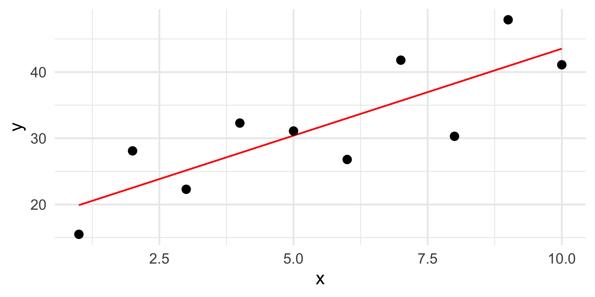
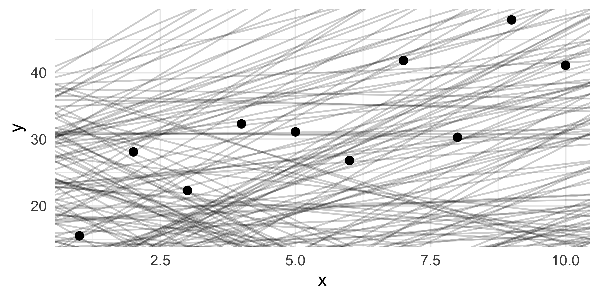
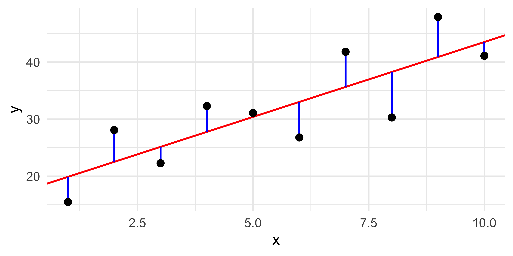
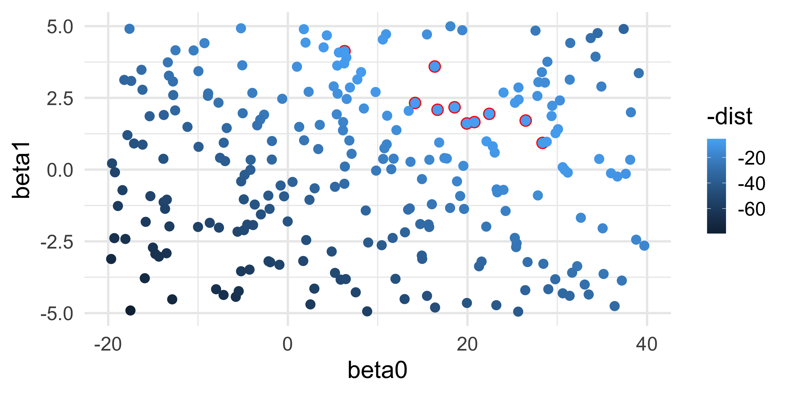
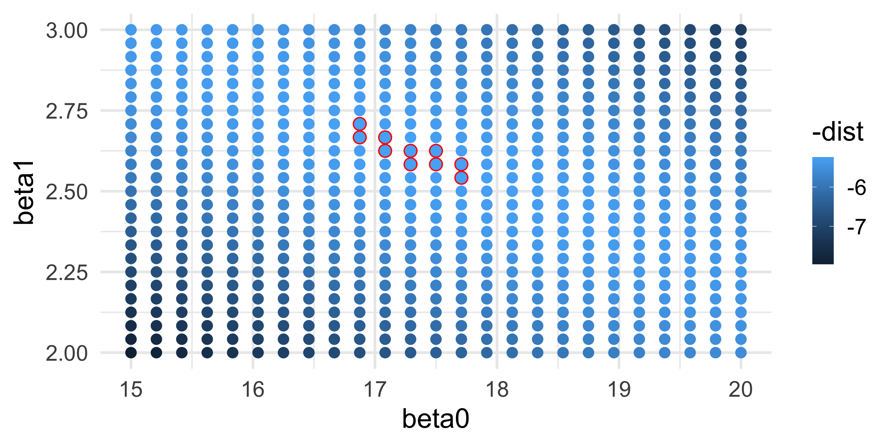
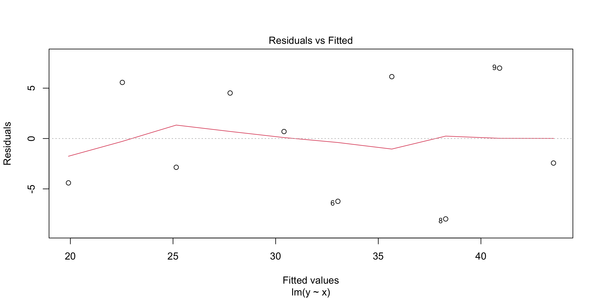
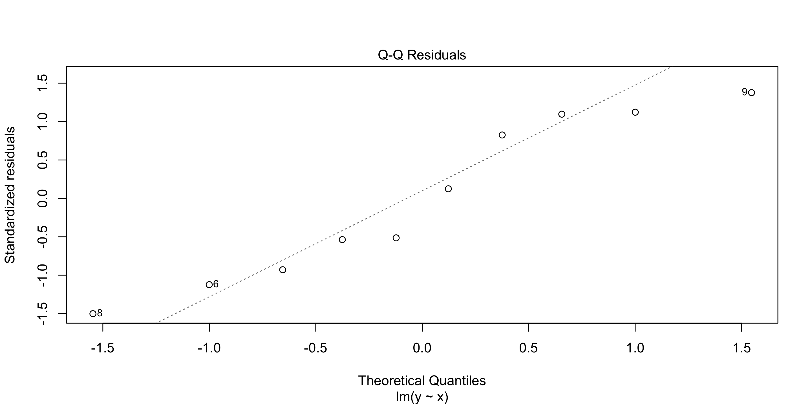
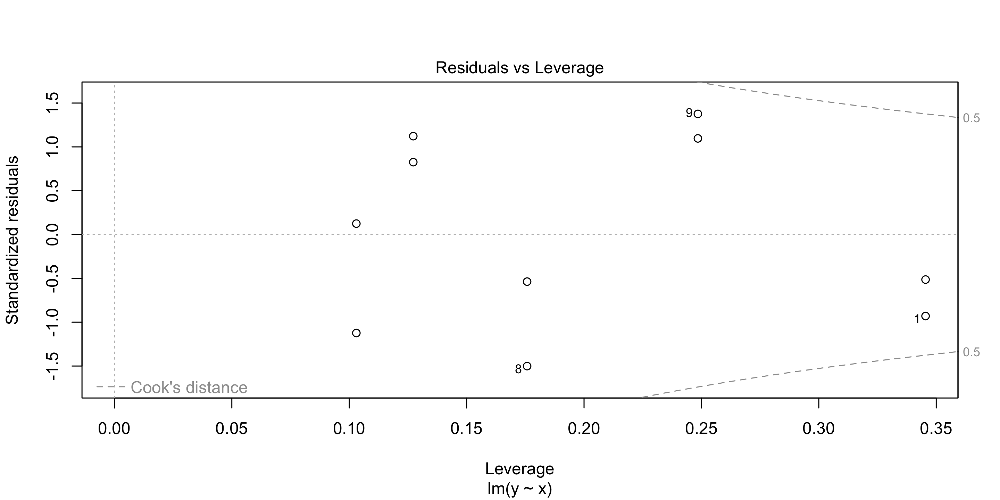
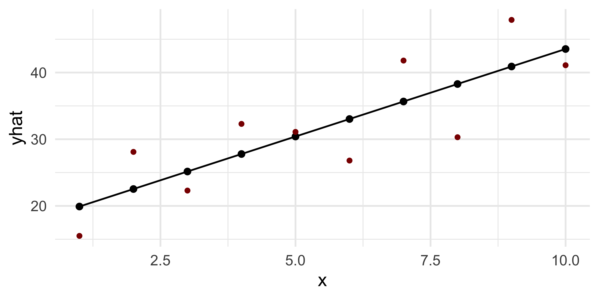
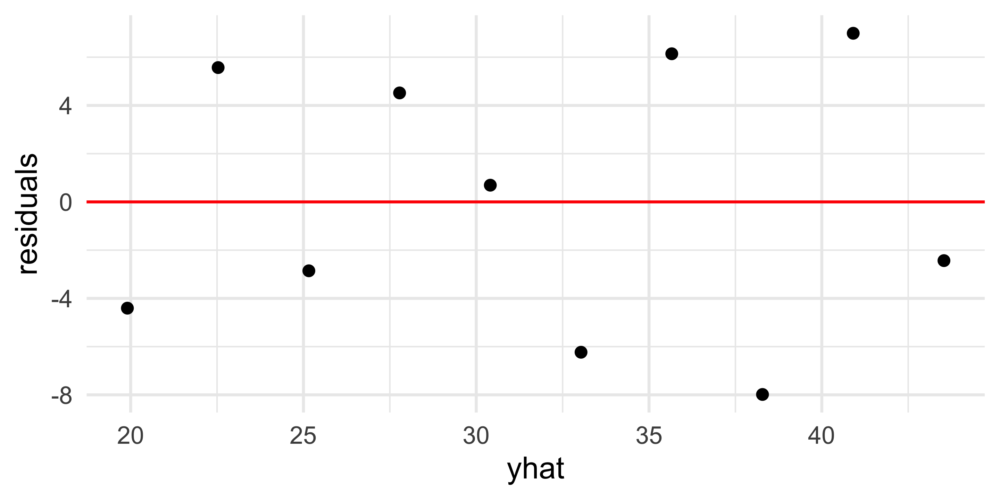

beta0 beta1
Min. :-19.675 Min. :-4.94909
1st Qu.: -4.903 1st Qu.:-2.17951
Median : 7.327 Median : 0.17390
Mean : 8.742 Mean : 0.03435
3rd Qu.: 23.167 3rd Qu.: 2.32714
Max. : 39.692 Max. : 4.99490 Regression
Rodney Dyer, PhD
Linear Models
The overall goal for our introduction here, is to develop models that may be parameterized by one or more terms. The most simple model:
\[ y = \beta_0 + \beta_1 x_1 + \epsilon \]
which includes:
An intercept ( \(\beta_0\) ),
A slope coefficient ( \(\beta_1\) ), and
And an error term ( \(\epsilon\) ).
Linear Models

Building Models
Random Search
In the most fundamental form, we can make random searches

Building A Model - Search Criterion

Searching Random Model Space
Searching Random Model Space
beta0 beta1 dist
1 -7.99071266 -4.168914 65.81826
2 18.10122289 4.994903 16.29991
3 -2.15029328 -3.194339 54.34034
4 -0.01774282 -1.806567 43.88875
5 -14.36062247 -3.031991 65.03769
6 12.08930793 1.377766 13.62261Top 10 Random Models
The Best Coefficients

Systematic Grid Search
We could then systematically search the \(\beta_0\), \(\beta_1\) response space for the best set of coefficients.

grid <- expand.grid( beta0 = seq(15,
20,
length = 25),
beta1 = seq(2,
3,
length = 25))
grid$dist <- NA
for( i in 1:nrow(grid) ) {
grid$dist[i] <- model_distance( grid$beta0[i],
grid$beta1[i],
df$x,
df$y )
}
ggplot( grid, aes(x = beta0,
y = beta1,
color = -dist)) +
geom_point( data = filter( grid,
rank(dist) <= 10),
color = "red",
size = 4) +
geom_point()Our Friend Least Squares Regression

Specifying a Formula
For R to perform these analyses for us, we need to be able to specify the function that we will use to represent the data (just like we did for plot(y~x)). Assuming the predictor is named x and the response is y, we have:
Single Predictor Model
y ~ xMultiple Additive Predictors
y ~ x1 + x2 Interaction Terms
y ~ x1 + x2 + x1*x2Fitting A Model
The easiest model.
Model Summaries
Summaries of the overal model components.
Call:
lm(formula = y ~ x, data = df)
Residuals:
Min 1Q Median 3Q Max
-7.9836 -4.0182 -0.8709 5.3064 6.9909
Coefficients:
Estimate Std. Error t value Pr(>|t|)
(Intercept) 17.280 4.002 4.318 0.00255 **
x 2.626 0.645 4.070 0.00358 **
---
Signif. codes: 0 '***' 0.001 '**' 0.01 '*' 0.05 '.' 0.1 ' ' 1
Residual standard error: 5.859 on 8 degrees of freedom
Multiple R-squared: 0.6744, Adjusted R-squared: 0.6337
F-statistic: 16.57 on 1 and 8 DF, p-value: 0.003581Components within the Summary Object
Like cor.test(), the object returned from lm() and its summary object have several internal components that you may use.
[1] "coefficients" "residuals" "effects" "rank"
[5] "fitted.values" "assign" "qr" "df.residual"
[9] "xlevels" "call" "terms" "model"
Components within the Summary Object
The probability can be found by looking at the data in the F-Statistic and then asking the F-distribution for the probability associated with the value of the test statistic and the degrees of freedom for both the model and the residuals.
The Summary Object
When you print out the summary( fit ) object, it uses the fstatistic to estimate a P-value. If we need that P-value directly, this is how it is done.
So You Have a Model, Now What?
Model Diagnostics - Residuals

Normality Of the Data

Leverage

Decomposition of Variance
The terms in this table are:
- Degrees of Freedom (df): representing
1degree of freedom for the model, andN-1for the residuals.
Decomposition of Variance
The terms in this table are:
- Sums of Squared Deviations:
- \(SS_{Total} = \sum_{i=1}^N (y_i - \bar{y})^2\)
- \(SS_{Model} = \sum_{i=1}^N (\hat{y}_i - \bar{y})^2\), and
- \(SS_{Residual} = SS_{Total} - SS_{Model}\)
Decomposition of Variance
The terms in this table are:
- Mean Squares (Standardization of the Sums of Squares for the degrees of freedom)
- \(MS_{Model} = \frac{SS_{Model}}{df_{Model}}\)
- \(MS_{Residual} = \frac{SS_{Residual}}{df_{Residual}}\)
Decomposition of Variance
The terms in this table are:
The \(F\)-statistic is from a known distribution and is defined by the ratio of Mean Squared values.
Pr(>F)is the probability associated the value of the \(F\)-statistic and is dependent upon the degrees of freedom for the model and residuals.
Decomposition of Variance
The classis ANOVA Table
Variance Exaplained
Call:
lm(formula = y ~ x, data = df)
Residuals:
Min 1Q Median 3Q Max
-7.9836 -4.0182 -0.8709 5.3064 6.9909
Coefficients:
Estimate Std. Error t value Pr(>|t|)
(Intercept) 17.280 4.002 4.318 0.00255 **
x 2.626 0.645 4.070 0.00358 **
---
Signif. codes: 0 '***' 0.001 '**' 0.01 '*' 0.05 '.' 0.1 ' ' 1
Residual standard error: 5.859 on 8 degrees of freedom
Multiple R-squared: 0.6744, Adjusted R-squared: 0.6337
F-statistic: 16.57 on 1 and 8 DF, p-value: 0.003581Relationship Between \(R^2\) & \(r\)
How much of the variation is explained?
\[ R^2 = \frac{SS_{Model}}{SS_{Total}} \]
Helper Functions
Grabbing the predicted values \(\hat{y}\) from the model.

Helper Functions - Residuals
The residuals are the distances between the observed value and its corresponding value on the fitted line.

Comparing Models
What Makes One Model Better
There are two parameters that we have already looked at that may help. These are:
The \(P-value\): Models with smaller probabilities could be considered more informative.
The \(R^2\): Models that explain more of the variation may be considered more informative.
New Data Set
Let’s start by looking at some air quality data, that is built into R as an example data set.
Ozone Solar.R Wind Temp
Min. : 1.00 Min. : 7.0 Min. : 1.700 Min. :56.00
1st Qu.: 18.00 1st Qu.:115.8 1st Qu.: 7.400 1st Qu.:72.00
Median : 31.50 Median :205.0 Median : 9.700 Median :79.00
Mean : 42.13 Mean :185.9 Mean : 9.958 Mean :77.88
3rd Qu.: 63.25 3rd Qu.:258.8 3rd Qu.:11.500 3rd Qu.:85.00
Max. :168.00 Max. :334.0 Max. :20.700 Max. :97.00
NAs :37 NAs :7 Base Models - What Influences Ozone
Individually, we can estimate a set of first-order models.
\[ y = \beta_0 + \beta_1 x_1 + \epsilon \]
Base Models - What Influences Ozone
| Model | R2 | P |
|---|---|---|
| Ozone ~ Solar | 0.121 | 1.79e-04 |
| Ozone ~ Temp | 0.488 | 0.00e+00 |
| Ozone ~ Wind | 0.362 | 9.27e-13 |
More Complicated Models
Multiple Regression Model - Including more than one predictors.
\(y = \beta_0 + \beta_1 x_1 + \beta_2 x_2 + \epsilon\)
More Complicated Models
| Model | R2 | P |
|---|---|---|
| Ozone ~ Solar | 0.121 | 1.79e-04 |
| Ozone ~ Temp | 0.488 | 0.00e+00 |
| Ozone ~ Wind | 0.362 | 9.27e-13 |
| Ozone ~ Temp + Wind | 0.569 | 0.00e+00 |
| Ozone ~ Temp + Solar | 0.510 | 0.00e+00 |
| Ozone ~ Wind + Solar | 0.449 | 9.99e-15 |
For Completeness
How about all the predictors. \(y = \beta_0 + \beta_1 x_1 + \beta_2 x_2 + \beta_3 x_3 + \epsilon\)
For Completeness
| Model | R2 | P |
|---|---|---|
| Ozone ~ Solar | 0.1213419 | 1.79e-04 |
| Ozone ~ Temp | 0.4877072 | 0.00e+00 |
| Ozone ~ Wind | 0.3618582 | 9.27e-13 |
| Ozone ~ Temp + Wind | 0.5687097 | 0.00e+00 |
| Ozone ~ Temp + Solar | 0.5103167 | 0.00e+00 |
| Ozone ~ Wind + Solar | 0.4494936 | 9.99e-15 |
| Ozone ~ Temp + Wind + Solar | 0.6058946 | 0.00e+00 |
\(R^2\) Inflation
Any variable added to a model will be able to generate Sums of Squares (even if it is a small amount). So, adding variables may artifically inflate the Model Sums of Squares.
Example:
What happens if I add just random data to the regression models? How does \(R^2\) change?
Random Data Effects
| Models | R2 |
|---|---|
| Ozone ~ Temp | 0.4877 |
| Ozone ~ Wind | 0.3619 |
| Ozone ~ Solar | 0.1213 |
| Ozone ~ Temp + Wind | 0.5687 |
| Ozone ~ Temp + Solar | 0.5103 |
| Ozone ~ Wind + Solar | 0.4495 |
| Ozone ~ Temp + Wind + Solar | 0.6059 |
Random Data Effects
| Models | R2 |
|---|---|
| Ozone ~ Temp + Wind + Solar + 1 Random Variables | 0.6062 |
| Ozone ~ Temp + Wind + Solar + 2 Random Variables | 0.6072 |
| Ozone ~ Temp + Wind + Solar + 3 Random Variables | 0.6079 |
| Ozone ~ Temp + Wind + Solar + 4 Random Variables | 0.6100 |
| Ozone ~ Temp + Wind + Solar + 5 Random Variables | 0.6101 |
| Ozone ~ Temp + Wind + Solar + 6 Random Variables | 0.6210 |
| Ozone ~ Temp + Wind + Solar + 7 Random Variables | 0.6242 |
| Ozone ~ Temp + Wind + Solar + 8 Random Variables | 0.6270 |
Perfect - My Models RULE
I can just add random variables to my model and always get an awesome fit!

Not so fast Bevis!
Model Comparisons
Akaike Information Criterion (AIC) is a measurement that allows us to compare models while penalizing for adding new parameters.
\(AIC = -2 \ln L + 2p\)
The criterion here are to find models with the lowest AIC values.
Comparisons
To compare, we evaluate the differences in AIC for alternative models.
\(\delta AIC = AIC - min( AIC )\)
AIC & ∂AIC
| Models | R2 | AIC | deltaAIC |
|---|---|---|---|
| Ozone ~ Temp | 0.488 | 1067.706 | 68.989 |
| Ozone ~ Wind | 0.362 | 1093.187 | 94.470 |
| Ozone ~ Solar | 0.121 | 1083.714 | 84.997 |
| Ozone ~ Temp + Wind | 0.569 | 1049.741 | 51.024 |
| Ozone ~ Temp + Solar | 0.510 | 1020.820 | 22.103 |
| Ozone ~ Wind + Solar | 0.449 | 1033.816 | 35.098 |
| Ozone ~ Temp + Wind + Solar | 0.606 | 998.717 | 0.000 |
| Ozone ~ Temp + Wind + Solar + 1 Random Variables | 0.606 | 1000.618 | 1.901 |
| Ozone ~ Temp + Wind + Solar + 2 Random Variables | 0.607 | 1002.362 | 3.645 |
| Ozone ~ Temp + Wind + Solar + 3 Random Variables | 0.608 | 1004.157 | 5.439 |
| Ozone ~ Temp + Wind + Solar + 4 Random Variables | 0.610 | 1005.545 | 6.828 |
| Ozone ~ Temp + Wind + Solar + 5 Random Variables | 0.610 | 1007.518 | 8.801 |
| Ozone ~ Temp + Wind + Solar + 6 Random Variables | 0.621 | 1006.375 | 7.657 |
| Ozone ~ Temp + Wind + Solar + 7 Random Variables | 0.624 | 1007.444 | 8.727 |
| Ozone ~ Temp + Wind + Solar + 8 Random Variables | 0.627 | 1008.618 | 9.901 |